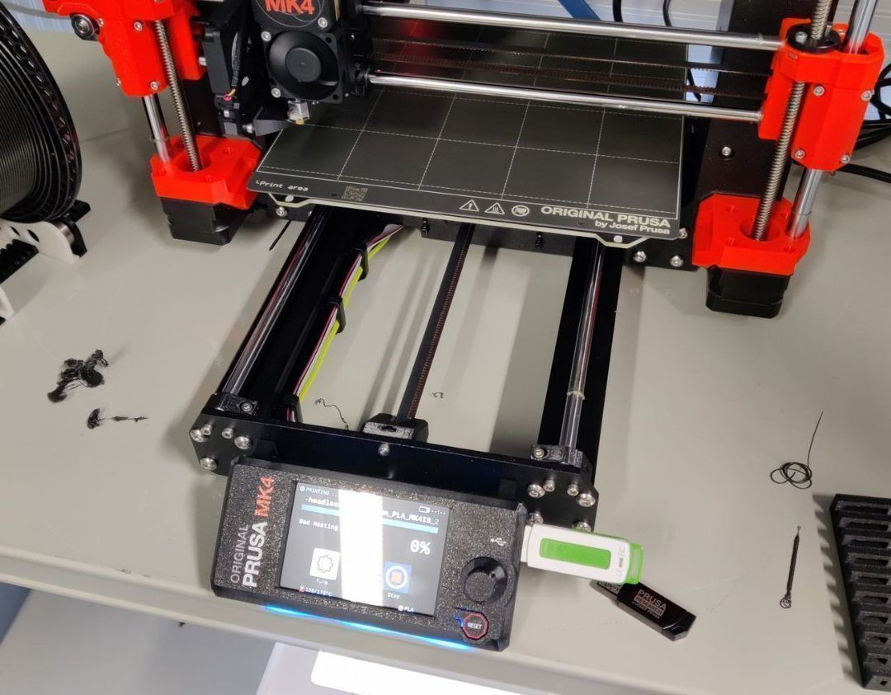
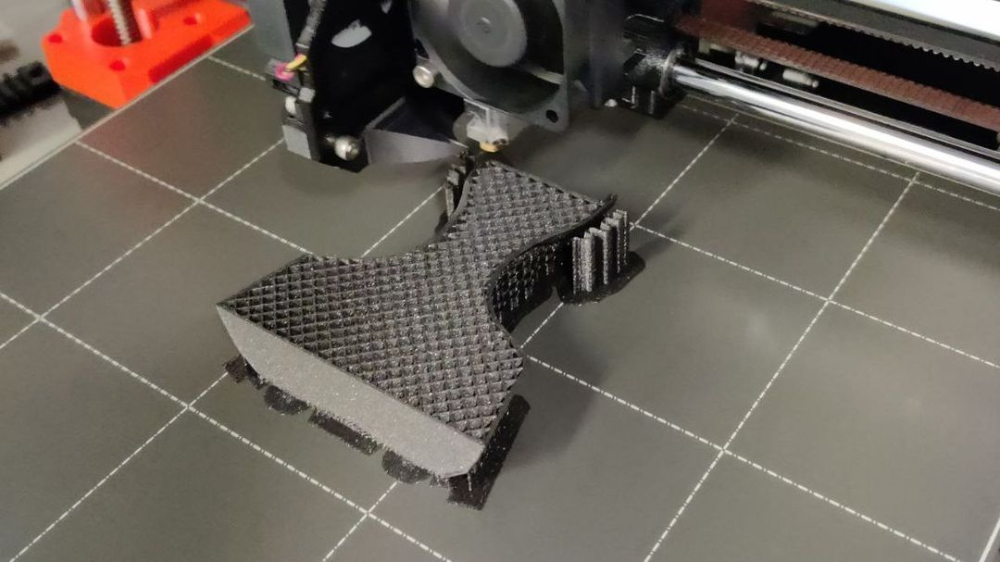

Table of Contents
Assignment
Basics
* Do NOT use Formlabs printers. This assignment is only FDM.
* Join one of the scheduled introduction / TA sessions to complete the group assignment and get booking access to printers.
* The FDM 3D printers are booked for you until end of next week.
Group assignment
* Join FDM 3D Printing introduction session and document as you go.
* After the introduction session each of you should print one design rule test file (angle, free, bridging, combined) using any of the FDM 3D printers.
* Look at the prints together and discuss what can you learn from them in terms of design rules.
* Each group has a group leader who is responsible for creating the group assignment page.
* Each participant from the group should link to that page from their individual documentation.
Individual assignment
* Design an object (a small one, few cm3) that CAN NOT be made using subtractive manufacturing.
* 3D print the object you designed using an FDM printer, such as Ultimaker, Prusa MK4 or Prusa MINI.
* 3D scan anything with one of our Creality Ferret 3D Scanners.Group
Our group assigment page this week was created by Celeste Smareglia.
Design
I wanted to do something non-technical for a change. I had been interested in printing 3D sculpts as miniatures, so I turned to Blender to model something simple.
I began modeling a half-headless bust of a person.
Starting from a generic human base mesh.
I removed a general chunk of the head from the top as a start. I then removed one side of the entire model and places in a mirror modifier so I would only have to model one side.
This was the part that fulfilled the non-subtractive aspect of the assigment. The inside of the mouth was modeled and could be seen from the open mouth of the model.
The finished model ended up quite simple as far as 3D sculpts generally go. But there were parts that were sure to push the detailing capabilities of the printer, such as the inside of the ear and the corners of the mouth.
I chose to print with one of the Prusa Mk4 printers at the lab. My choice was mostly based on aesthetics. I wanted to be able to see the printing process clearly. The slicing program also seemed more straightforward to use, for me.
Imported the STL file I exported out of Blender. Default settings.
Sliced mostly with the recommended settings. I chose 30% infill and added some Brim just in case, since the model was taller than it was wide. Also had to scale up the model quite a bit; the resolution of the slices I saw in the preview viewport were quite helpful in determining an appropriate size.
Of course I also had to double-check the internal structure of the mouth. Seemed fine to me.
Printing
Preparing the printer.
Mostly the model turned out fine. It is hard to see from the image, but the upper lip of it had collapsed and made it impossible to see and verify if there actually was a cavity there.
Scanning
While the first, smaller model was printing I went ahead and tried out the Creality Ferret scanner. My first instinct was to try to scan my headphones.
This was a disaster. I don’t normally think of my headphones as shiny, but immediately upon trying to scan them it was obvious that they were, indeed, highly reflective.
My gym bag was the second object I tried to scan. This was more successful, but clearly there were still some parts of the material the reflected just enough light to give the scanner difficulties. Some of the creases and shadow areas seemed to also get ignored no matter how many times I went over them.
Finally I found a suitable object. There was a styrofoam cow on one of the tables. Its model ended up quite seamless.
Bigger Printing
The open mouth of the first print had collapsed, so I wanted to do another one. Quite a bit bigger, and positioned face-up so the slices of the filament couldn’t collapse like they did earlier.
I also learned the differences between the different support options. I had initially chosen to put supports everywhere, but then noticed that this meant there were also supports inside the mouth. Choosing to only place supports extending directly from the build plate fixed this issue.
